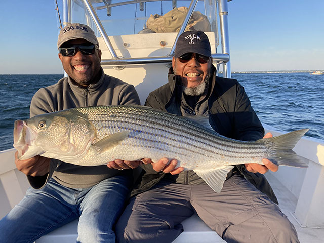

Daily Bite Report
Last Updated: February 15, 2026 – 4:30 AM

Offshore Report
Rockfish & Lingcod
Fishing has been productive in 180–250 feet of water west of Morro Bay. White and chartreuse jigs have been performing well, along with heavy swimbaits near rocky structure. Lingcod have been aggressive in deeper pockets.
Inside the Bay
Halibut
Halibut are showing along sandy flats inside the bay, especially during moving tides. Live anchovies and soft plastic swimbaits are producing consistent bites.
Surf & Jetty
Striped Bass & Perch
Early mornings near the jetty have seen striped bass activity on topwater lures. Surf perch are biting along sandy beaches using sand crabs and light Carolina rigs.
Bait Availability
[close-up of live anchovies in a bait tank]
Live anchovies
— In stock
Live shrimp
— Limited supply
Frozen squid & sardines
— Available
Call ahead for current availability: (650) 468 8338
Conditions
Water Temp:
54–56°F
-
Swell:
3–5 ft
Wind:
Light morning wind increasing in afternoon
Stop by before you head out for updated reports and local advice.
Contact
123 Happy Ave, San Luis Obispo, California 805-756-3663Hours
Tuesday–Friday: 0:00–0:00
Saturday–Sunday: 0:00–0:00
Closed on Mondays